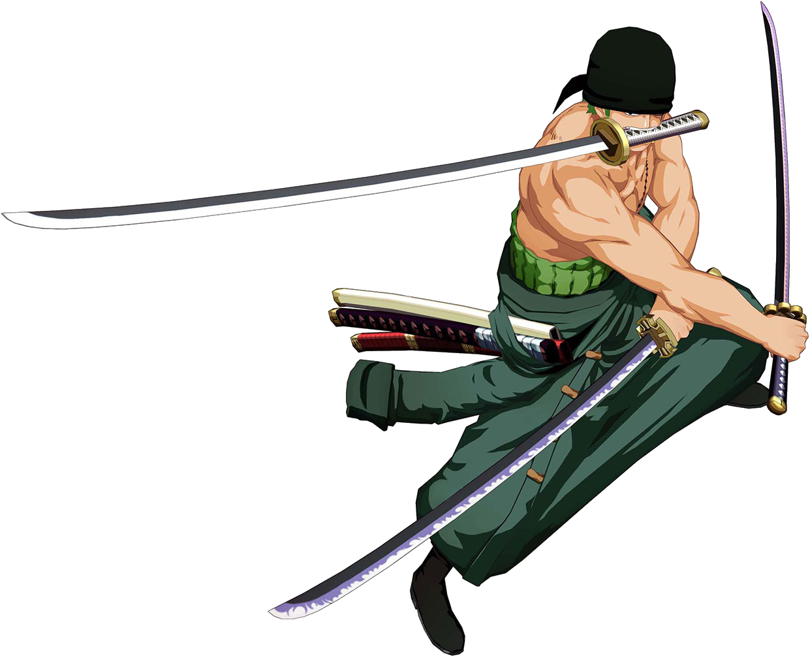

Monkey D. Luffy é o capitão do bando dos chapéu de palha, um pirata que comeu a fruta gomu gomu.


One Piece é uma série de mangá escrita e ilustrada por Eiichiro Oda. Os capítulos têm sido serializados na revista Weekly Shōnen Jump desde 22 de julho de 1997, com os capítulos compilados e publicados em 98 volumes tankōbon pela editora Shueisha até fevereiro de 2021. One Piece conta as aventuras de Monkey D.
Assita a luta entre Monkey.D luffy e Katakuri, o primeiro comandante de todo o exército dela.